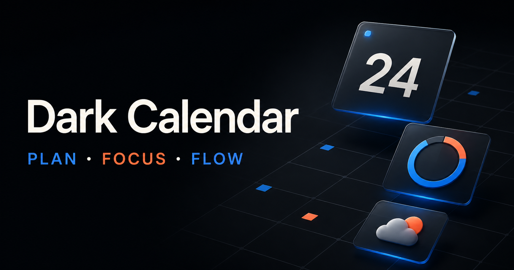

바탕화면에 바로
앱을 열어 찾아다니지 않아도 캘린더, 업무 목록과 위젯이 데스크톱 위에 계속 보입니다.
사용자 맞춤형 데스크톱 캘린더 & 위젯
캘린더와 업무 패널, 시계·날씨·D-Day 위젯을 바탕화면에 바로 띄우세요. 크기와 위치, 레이아웃과 색상까지 내 방식대로 자유롭게 완성할 수 있습니다.

Windows 10 / 11바탕화면에 바로 배치
Microsoft Store공식 설치 및 업데이트
로컬 우선일정과 설정은 내 PC에
Google Calendar선택형 양방향 연동
01 / DESKTOP, YOUR WAY
Dark Calendar의 가장 큰 장점은 필요한 기능을 바탕화면에 직접 구현하는 것입니다. 정해진 틀에 맞추는 대신, 사용자가 자신의 화면과 업무 방식에 맞춰 공간을 설계합니다.

앱을 열어 찾아다니지 않아도 캘린더, 업무 목록과 위젯이 데스크톱 위에 계속 보입니다.
각 요소를 원하는 곳으로 이동하고 화면 크기와 정보량에 맞춰 넓이와 높이를 조절할 수 있습니다.
캘린더 중심, 업무 패널 중심, 위젯 중심 등 사용 목적에 따라 서로 다른 화면 구성을 만들 수 있습니다.
테마와 강조 색상, 패널과 위젯의 표현 방식을 조합해 나만의 시각 체계를 완성합니다.
02 / PRODUCTIVITY SYSTEM
기록만 하는 캘린더가 아닙니다. 확인하고, 선택하고, 집중하는 흐름이 한 화면 안에서 이어집니다.
MONTH VIEW
월간 일정, 이번 주 업무, 루틴과 디렉티브를 한눈에 확인하고 바로 처리합니다.
DESKTOP WIDGETS
시계, 날씨, 스톱워치, 날짜 카드, 카운트다운, D-Day, 텍스트 위젯을 여러 개 띄워두세요.
FOCUS MODE
작업 선택, Pomodoro 타이머, 완료 기록을 끊김 없이 연결해 집중 시간을 쌓습니다.
MAKE IT YOURS
테마, 패널, 위젯 배치와 텍스트 템플릿을 나의 데스크톱 흐름에 맞게 조정합니다.

COMPLETE FEATURE MAP
단순한 월간 달력처럼 보여도, 안에는 하루를 설계하고 실행하는 세부 기능이 촘촘하게 연결되어 있습니다.
01일정과 업무
02바탕화면과 위젯
03집중과 유틸리티
04연동과 관리
03 / FEATURE EXPLORER
실제 프로그램 화면을 선택해 자세히 살펴보세요. 이미지를 누르면 큰 화면으로 확인할 수 있습니다.
CALENDAR WORKSPACE
월간 캘린더 오른쪽에 이번 주 일정, 루틴, 디렉티브가 이어집니다. 날짜를 확인한 자리에서 해야 할 일을 바로 선택할 수 있습니다.
04 / GOOGLE CALENDAR
연동은 선택 기능입니다. 한 번만 Google Cloud에서 데스크톱용 인증 파일을 준비하면, 이후에는 Dark Calendar 안에서 캘린더를 선택하고 동기화할 수 있습니다.
OPTIONAL연동하지 않아도 사용 가능로컬 캘린더와 위젯 기능은 Google 계정 없이도 동작합니다.
ONE TIME인증 준비는 처음 한 번같은 Google 계정의 여러 캘린더는 인증 후 목록에서 선택합니다.
YOUR CONTROL연결과 해제는 사용자가 결정동기화를 끄거나 인증을 초기화하면 언제든 연결을 중단할 수 있습니다.

BEGINNER SETUP
Google의 화면 이름이 바뀌더라도 핵심은 프로젝트 → API → 동의 화면 → 데스크톱 클라이언트 → 앱 인증 순서입니다.
Cloud Console에서 새 프로젝트를 만들거나 기존 프로젝트를 선택합니다. 개인용이라면 알아보기 쉬운 이름이면 충분합니다.
API 라이브러리에서 Google Calendar API를 찾아 ‘사용’으로 설정합니다. 이 단계가 빠지면 인증 후에도 캘린더를 읽을 수 없습니다.
Google Auth Platform의 Branding과 Audience를 설정합니다. 외부(External)·테스트 상태라면 로그인할 본인 Google 계정을 테스트 사용자로 추가합니다.
Clients에서 OAuth 클라이언트를 만들고 유형은 반드시 ‘Desktop app’을 선택합니다. 생성 후 JSON 파일을 다운로드합니다.
Web application 유형은 Dark Calendar에서 동작하지 않습니다.설정 → Calendar & Sync → 연결에서 ‘Google Calendar 동기화 사용’을 켜고 JSON 파일을 선택한 뒤 ‘인증’을 누릅니다. 브라우저가 열리면 계정을 선택하고 권한을 허용합니다.
연결 후 캘린더 목록에서 사용할 항목을 선택하고 ‘캘린더 접근 테스트’를 실행합니다. 성공 메시지를 확인한 뒤 설정을 저장하면 준비가 끝납니다.
제목, 날짜·시간, 종일 일정, 설명, 장소, 색상과 반복 일정 정보를 Dark Calendar에서 함께 볼 수 있습니다.
Dark Calendar에서 만든 일정과 수정한 시간·내용이 선택한 Google 캘린더에 반영됩니다.
동기화할 때 Google 변경 사항을 먼저 확인한 뒤 로컬 변경을 전송합니다. 양쪽이 함께 바뀐 충돌은 기록을 보존하고 선택할 수 있게 안내합니다.
05 / DAILY FLOW
정보를 여러 앱으로 옮기지 않아도 됩니다. 확인에서 몰입까지, 같은 맥락 안에서 이어집니다.
SCAN
월간 일정과 오늘의 루틴, 이번 주 업무를 같은 화면에서 훑어봅니다.
CHOOSE
일정, 루틴, 디렉티브를 구분해 우선순위를 정하고 실행 항목을 고릅니다.
FOCUS
집중 모드와 Pomodoro를 시작하고 완료한 시간은 기록으로 남깁니다.

06 / PRIVACY & OPEN SOURCE
계정 서버와 광고, 사용자 분석 도구 없이 로컬 저장을 기본으로 합니다. Google Calendar, 날씨, ICS 구독은 사용자가 켠 기능에 한해 해당 서비스와 직접 통신합니다.
개인정보 처리 방식 자세히 보기일정, 업무, 설정은 기본적으로 사용자 PC 안에 머뭅니다.
배포 버전과 같은 태그의 전체 대응 소스와 라이선스를 GitHub에서 제공합니다.
버전별 소스 보기 ↗한국어를 기본으로 영어, 일본어, 중국어 등 다양한 언어 전환을 지원합니다.
07 / FAQ
Dark Calendar는 Windows 데스크톱 환경에 맞춰 설계되었습니다. 정확한 최신 요구 사항은 Microsoft Store 제품 페이지에서 확인할 수 있습니다.
아닙니다. 로컬 캘린더만으로 사용할 수 있으며, 필요한 경우에만 Google Calendar 동기화를 직접 설정합니다.
Microsoft Store에서 판매되는 유료 앱입니다. 현재 가격과 구매 조건은 Store에서 확인하세요. 소스 코드는 GPLv3 조건에 따라 공개됩니다.
시계, 스톱워치, 날짜 카드, 카운트다운, D-Day, 텍스트, 날씨 위젯을 지원하며 같은 종류를 여러 개 배치할 수도 있습니다.
기본 데이터는 로컬에 저장됩니다. Google Calendar, 날씨, ICS 등 사용자가 활성화한 외부 기능만 해당 제공자와 직접 통신합니다.
DARK CALENDAR FOR WINDOWS
일정, 할 일, 집중 도구와 위젯을 한곳에 모아보세요.